Big Data e Ingeniería de Datos
Clase 5 · Spark reparte el trabajo; la ingesta trae datos sin repetir
Posgrado UdeM · 17 nov 2026
Antes de la clase, cada persona terminó la guía y la instalación del README de curso/clase05 (pip install de requirements-dev.txt y el kernel «Python (bigdata)»); quien no lo hizo lo termina mientras avanza la teoría. Al proyectar la portada, cada persona entra a SageMaker Studio y haz clic en Run space si el Space estaba apagado: se apaga solo tras 60 minutos sin uso. Pide que dejen abierto el Code Editor con una terminal lista: en la slide 5 ejecutan un comando que repara el entorno y en la 6 copian los notebooks y eligen el kernel, antes de cualquier teoría. Hoy es la primera vez que usan Spark y la primera vez que escriben código del pipeline. El día tiene dos partes: hasta el descanso, Spark en dos notebooks (01_fundamentos y 02_como_funciona); después, la teoría de la ingesta y el lab, donde cada persona escribe la ingesta de las tres fuentes a su propio bronze (03_lab). El resumen de los datos (silver y gold) y la terminal pasan a la clase 6. El trabajo es individual y la única ayuda es el instructor. Tiempo: 1 min. Siguiente: la pregunta que ordena la clase.
¿Cómo llegan, sin repetirse, los datos de tres fuentes que cambian cada mes?
Caso del curso: ¿la lluvia cambia los viajes de Uber y Lyft en NYC?
Problema: cada mes la TLC (Taxi and Limousine Commission, el regulador de taxis de NYC) publica un archivo de viajes, Open-Meteo entrega el clima del mes y las zonas casi no cambian. Enero de 2024 trae 19 663 930 viajes en un solo archivo y el año completo, 239.5 M (clase05_medidas.md; restricciones_curso.md). El pipeline tiene que traer esos datos a tu almacenamiento cada mes y no puede dejarlos repetidos, porque cualquier suma quedaría inflada sin ningún error. Esa ingesta se escribe con Spark, que lee el archivo y escribe el resultado repartiendo el trabajo; por eso la primera mitad de la clase es Spark y la segunda, la ingesta. El resumen por día, zona y empresa (silver y gold) se hace en la clase 6. Pide a dos o tres personas que digan qué puede salir mal al traer 20 M de filas cada mes (descargar dos veces, dejar un archivo a medias, que la fuente corrija un mes, quedarse sin memoria) y anota las respuestas: el día las contesta una por una. Esta conversación es corta, de 2 min. La hoja de ruta de la clase está en la slide siguiente. Tiempo: 2 min. Siguiente: el resumen de lo que haces hoy, de las fuentes a tu bronze.
Hoy construyes la ingesta: traes cada fuente a tu bronze y la tabla de control evita repetir
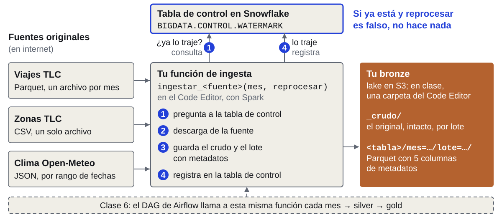
El watermark recuerda qué mes de qué fuente ya entró y permite reprocesarlo a propósito.
Problema: hoy se mezclan dos temas, Spark y la ingesta, y quien no ve hacia dónde va se pierde entre los comandos y los notebooks. Antes del mapa, dos palabras que se usan desde ya. El lake, o lago de datos, es el conjunto de archivos del proyecto guardados en tu bucket de S3. El medallion es la forma de ordenar ese lake en tres capas: bronze guarda cada fuente tal como llega; silver guarda los viajes limpios y unidos con zonas y clima; gold guarda los resúmenes que responden la pregunta del curso, si la lluvia cambia los viajes, y se cargan a Snowflake para consultarlos. Hoy solo se construye bronze; la slide 35 vuelve sobre las tres capas con detalle. Este diagrama es el mapa de la clase y se lee de izquierda a derecha. A la izquierda están las tres fuentes originales, que viven en internet: los viajes de la TLC, un archivo Parquet por mes; las zonas de la TLC, un CSV único; y el clima de Open-Meteo, un JSON que se pide por rango de fechas. En el centro está la función de ingesta que escribes hoy en el Code Editor, con Spark: ingestar_<fuente>(mes, reprocesar), una por cada fuente; la de zonas no recibe mes, porque las zonas son un solo archivo. Hace cuatro cosas en orden. Paso 1: pregunta a la tabla de control si ya trajo ese mes. Paso 2: descarga el archivo de la fuente. Paso 3: guarda el crudo y el lote con metadatos en tu bronze. Paso 4: registra en la tabla de control que el mes quedó listo. Arriba está esa tabla, BIGDATA.CONTROL.WATERMARK en Snowflake, también llamada watermark: recuerda qué mes de qué fuente ya entró a bronze. La flecha «¿ya lo traje?» es la consulta del paso 1 y la flecha «lo traje» es el registro del paso 4. La regla está escrita junto a la tabla: si el mes ya está registrado y reprocesar es falso, la función no hace nada. Con reprocesar verdadero se repite a propósito, por ejemplo cuando la fuente corrige un mes, y se crea un lote nuevo sin borrar los anteriores. A la derecha está tu bronze, la primera capa del lake: en un pipeline real es un lake en S3 y en clase es una carpeta del Code Editor. Allí, _crudo/ guarda el original tal como se descargó, intacto y por lote, y <tabla>/mes=…/lote=…/ guarda el Parquet con las cinco columnas de metadatos. El color cobre se usa solo para bronze. La franja de abajo es la clase 6: el DAG de Airflow, el orquestador que ejecuta pasos en orden, llamará a esta misma función cada mes, y de ahí salen silver y gold; hoy no se construyen. Agenda con la hora de inicio de cada bloque: de 0:00 a 1:27, Spark y sus fundamentos (cómo se ve tu lake hoy y en producción, el comando que repara el entorno y crea la tabla de control, los notebooks, la arquitectura de Spark, tus datos y la API de DataFrames, con práctica); de 1:27 a 1:56, Spark por dentro y la comparación con pandas y Snowflake; descanso de 20 min, de 1:56 a 2:16; de 2:16 a 2:50, la teoría de la ingesta (medallion, decisiones de diseño de bronze, metadatos y tabla de control); y de 2:50 a 3:53, el lab, donde escribes las tres funciones. Los últimos 7 min son el cierre. Pide que ubiquen cada caja del diagrama en lo que van a hacer: el diagrama vuelve al final de la clase. Tiempo: 3 min. Siguiente: cómo se ve tu lake hoy y cómo se verá en producción.
Hoy tu lake tiene bronze; en producción, el DAG llena las tres capas cada mes sin intervención
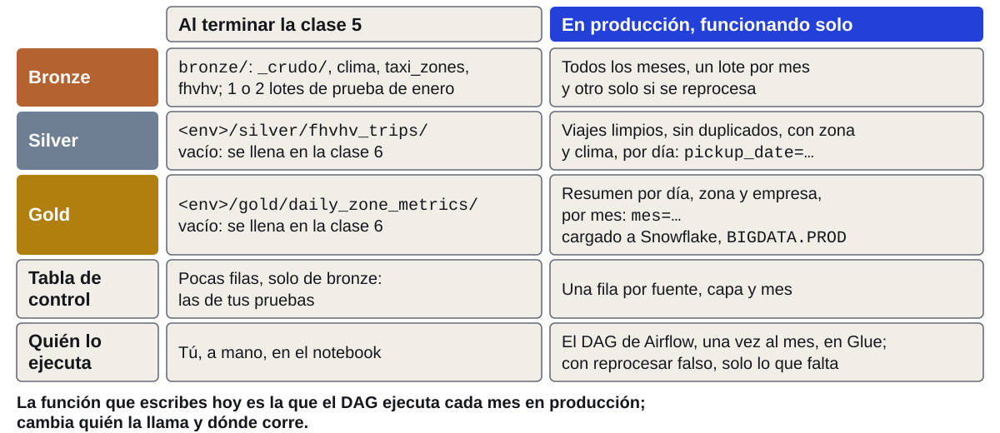
Problema: el mapa anterior dice qué construyes, pero no cómo se ve tu lake al terminar la clase ni cómo se verá cuando el pipeline corra solo, y sin esa imagen no es claro por qué lo que escribes hoy basta. El diagrama compara dos momentos, fila por fila. Columna izquierda, al terminar la clase 5. Bronze: tu carpeta bronze tiene _crudo/ y las carpetas clima, taxi_zones y fhvhv, con uno o dos lotes de prueba de enero (en el lab las tablas de práctica se llaman prueba_clima, prueba_taxi_zones y prueba_fhvhv). Silver y gold están vacíos: se llenan en la clase 6. La tabla de control queda sin filas tuyas: el lab la usa durante las pruebas y la última celda borra esos registros de práctica; tus lotes, en cambio, se quedan en tu carpeta bronze. Y quien ejecuta eres tú, a mano, en el notebook. Columna derecha, en producción, funcionando solo. Bronze tiene todos los meses, un lote por mes y otro solo si se reprocesa. Silver tiene los viajes limpios, sin duplicados, con su zona y el clima del día. Gold tiene el resumen por día, zona y empresa, y se carga a Snowflake para consultarlo. La tabla de control tiene una fila por fuente, capa y mes. Y quien ejecuta es el DAG de Airflow, el programa que corre los pasos en orden, una vez al mes, en Glue, el servicio de AWS que ejecuta Spark sin que administres máquinas; con reprocesar falso solo hace lo que falta. La frase al pie es la idea de la clase: la función que escribes hoy es la que el DAG ejecuta cada mes; cambia quién la llama y dónde corre. Qué no resuelve: el diagrama no muestra cómo se construyen silver y gold; eso es el lab de la clase 6. Tiempo: 2 min. Siguiente: el comando que repara tu entorno y crea la tabla de control.
Antes de empezar, un comando repara tu entorno de Python y crea en Snowflake la tabla de control
# Abre una terminal en el Code Editor, el editor en la nube donde trabajas.
cd ~/bigdata && git pull && make reparar-entorno && make snowflake
# cd entra a ~/bigdata, el repositorio con el código del curso.
# git pull trae la versión más reciente de ese repositorio.
# reparar-entorno rehace .venv, el Python del curso, con la versión 3.12
# porque el Code Editor pasó a 3.13; registra el kernel y repara snow.
# make snowflake usa Terraform, que aplica infraestructura descrita en
# archivos: crea en Snowflake, el almacén de datos en la nube, el esquema
# CONTROL con su tabla de control, y despliega tu código a Glue (~1 min).
# Terraform pide confirmar el plan: escribe yes.
Espera a que termine: debe aparecer «Entorno reparado: Python 3.12…» y Terraform debe cerrar sin error. La tabla de control la usarás después del descanso.
Problema: la ingesta que escribirás hoy tiene que recordar qué meses ya trajo, y esa memoria vive en una tabla de Snowflake que todavía no existe en tu cuenta; además, el Code Editor pasó a Python 3.13 y el Python del curso es el 3.12, así que el entorno hay que repararlo antes de abrir los notebooks. Un solo comando hace las dos cosas. Dónde: Terminal > New Terminal en el Code Editor. Entrada: la línea de la slide, parte por parte. cd ~/bigdata entra a la carpeta del repositorio: todos los comandos del curso se ejecutan desde ahí. git pull trae la versión más reciente del repositorio, con los notebooks y el código corregidos esta semana. make reparar-entorno rehace .venv, el entorno de Python del curso, con la versión 3.12; reinstala las dependencias, registra el kernel «Python (bigdata)» y comprueba que snow, la línea de comandos de Snowflake, funcione. Es la parte más lenta: según el README de la clase tarda unos minutos y termina con la línea «Entorno reparado: Python 3.12…». make snowflake es un atajo con nombre: el Makefile asocia ese nombre a scripts/snowflake.sh, que aplica con Terraform lo que hay en infra/snowflake (agrega el esquema CONTROL, una carpeta de tablas dentro de la base BIGDATA, y la tabla BIGDATA.CONTROL.WATERMARK) y después despliega tu código a Glue; solo agrega recursos nuevos, no cambia ni borra lo que ya tienes, y tarda cerca de 1 min. Terraform muestra el plan y pregunta si lo aplicas: escribe yes. Qué esperar: «Entorno reparado: Python 3.12…» al terminar la primera parte y, al final, Terraform cerrando sin error. Qué se guarda y cómo se usa la tabla se explica después del descanso (slides 42 y 43). Errores comunes: «No rule to make target 'reparar-entorno'» o «'snowflake'» significa que no estás en ~/bigdata (empieza siempre con cd ~/bigdata &&); si git pull se detiene con un conflicto, editaste un archivo dentro del repositorio (trabaja siempre sobre tu copia, slide 6); si falla por la conexión de Snowflake, ejecuta cd ~/bigdata && make snowflake-conexion y repite. Mientras el comando termina, no abras todavía los notebooks: el kernel se elige en la slide siguiente, después de reparar el entorno. Tiempo: 6 min. Siguiente: copiar los notebooks y elegir el kernel.
Después copias los notebooks y eliges el kernel que ejecuta tus celdas
# En la misma terminal, copia los notebooks, documentos con celdas de código,
# a una carpeta tuya.
cd ~/bigdata/curso/clase05
mkdir -p ~/clase05_mis_notebooks
cp 01_fundamentos.ipynb 02_como_funciona.ipynb 03_lab.ipynb \
~/clase05_mis_notebooks/
# Cada celda de código del notebook empieza con «# Celda N».
Trabaja sobre la copia: así git pull no choca. Elige el kernel en Select Kernel > Jupyter Kernel > Python (bigdata), y otra vez tras cada reparar-entorno. Nunca uno de Glue: cobra.
Problema: los notebooks viven dentro del repositorio, y si trabajas ahí, el próximo git pull choca con tus cambios; además, el notebook ejecuta tus celdas con el kernel que elijas, y uno equivocado falla o cobra. Por eso, antes de la teoría, cada persona hace su copia y elige el kernel. Dónde: la misma terminal de la slide 5 (comprueba que make reparar-entorno y make snowflake ya terminaron). Entrada: los comandos de la slide, que copian los tres notebooks a ~/clase05_mis_notebooks (no copies 03_lab_solucion.ipynb, que es del instructor). Salida esperada de la copia: ninguna; ls ~/clase05_mis_notebooks debe listar los tres. Abre 01_fundamentos desde la copia, haz clic en Select Kernel, elige Jupyter Kernel y después Python (bigdata); si no aparece, elige Python Environments y después .venv. Hazlo de nuevo cada vez que corras make reparar-entorno, porque recrea .venv. Ejecuta la Celda 1 con Shift+Enter: debe imprimir una ruta con .venv y la versión de Java. Si imprime «AVISO: este kernel no es el del proyecto», vuelve a elegir el kernel. Los kernels Glue PySpark, Glue Spark y SparkMagic aparecen en la lista, pero abren una sesión de Glue en la nube que cobra mientras está abierta. Errores comunes: «ModuleNotFoundError: No module named 'pandas'» es otro kernel; elige Python (bigdata) y reinicia. «Java gateway process exited» se arregla con cd ~/bigdata && make setup. En el 03_lab la Celda 3 ya no baja enero: define dónde escribe tu ingesta y tu conexión de Snowflake. Tiempo: 3 min. Siguiente: cómo trabaja Spark: un driver que planifica y ejecutores que hacen el trabajo.
Spark responde repartiendo el trabajo: un driver planifica y los ejecutores trabajan en paralelo
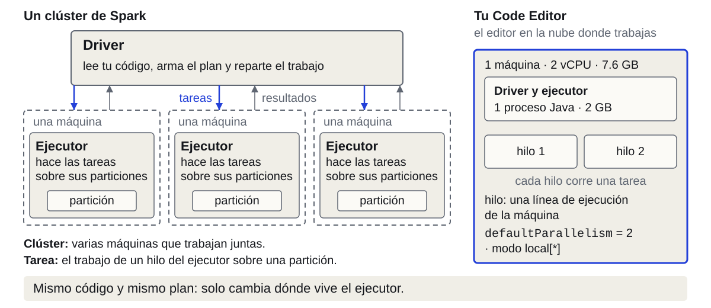
Tu Code Editor, el editor en la nube, es un clúster en miniatura: un ejecutor con 2 hilos.
Con el entorno listo, la teoría. Problema: pandas carga la tabla completa en la memoria de un solo proceso; mientras cabe es rapidísimo y cuando no cabe se cae (la medición está en la slide 27). Idea de ingeniería: partir los datos en trozos independientes y repartir el trabajo entre varios procesadores. Spark lo hace con cuatro piezas, definidas en el diagrama: el driver lee tu código, arma el plan y reparte el trabajo; los ejecutores son procesos que lo hacen sobre los datos; una partición es un trozo de las filas; una tarea procesa una partición en un hilo del ejecutor, y un ejecutor corre tantas tareas a la vez como núcleos tenga. En un clúster real los ejecutores son procesos repartidos en varias máquinas (Glue, en la clase 7). En tu Code Editor, Spark corre en modo local[*]: hay un solo proceso de Java que hace de driver y de ejecutor a la vez; el ejecutor es uno solo y tiene dos hilos, uno por núcleo, así que corren dos tareas al mismo tiempo (no hay dos ejecutores). La instancia ml.t3.large tiene 2 vCPU y 7.6 GB de RAM, y el driver tiene 2 GB (clase05_medidas.md). La lógica es idéntica; solo cambia dónde viven el ejecutor y sus hilos. La Celda 5 del notebook 01 imprime defaultParallelism, el número de hilos. Qué resuelve Spark: planificar, repartir y juntar resultados. Qué no: si tu transformación obliga a juntar todo en un lugar, Spark también se queda esperando (slide 32). Tiempo: 4 min. Siguiente: tu bucket y el archivo de enero.
Ahora continuamos con el notebook 01: conocer los datos y usar Spark
– Las tres fuentes.
– select, where, groupBy, join, SQL.
– Acciones y depuración.
– Spark listo y las operaciones de tu ingesta, probadas.
Transición al primer notebook. Di en voz alta: ahora continuamos con el notebook 01_fundamentos, en tu copia de ~/clase05_mis_notebooks, con el kernel Python (bigdata). Aquí vamos a encender Spark, leer el mes de enero, conocer las tres fuentes con un registro real de cada una y practicar las operaciones básicas: elegir columnas, filtrar, agrupar, unir y escribir lo mismo en SQL; al final, la diferencia entre transformaciones y acciones y cómo depurar. El objetivo es que al terminar el notebook tengas Spark funcionando y las operaciones que vas a necesitar en tu ingesta ya probadas. Las slides siguientes, hasta la del cambio al notebook 02, se ejecutan en este notebook; la etiqueta azul de arriba a la izquierda lo recuerda. Tiempo: 1 min.
Tus datos viven en tu bucket de S3, que lleva el número de tu cuenta de AWS
# S3 es el almacenamiento de archivos de AWS; un bucket es su carpeta raíz.
aws sts get-caller-identity --query Account --output text
# Imprime tu número de cuenta, de 12 dígitos. Ejemplo: 123456789012
# Tu bucket se llama bigdata-lake-<tu cuenta>-us-east-2
# Ejemplo: bigdata-lake-123456789012-us-east-2
# El lake es tu lago de datos: los archivos que guardas en ese bucket.
Abre tu copia de 01_fundamentos y ejecuta en orden las Celdas 1 a 5: la 2 arma tu bucket, la 3 copia enero y la 5 enciende Spark.
Para qué: Spark no lee de S3 en esta clase: lee archivos del disco de esta máquina, y la Celda 3 copia ahí el archivo de enero desde tu bucket o, si no está, desde el bucket público del curso. El nombre se arma con un patrón fijo, <prefijo>-lake-<número de cuenta>-<región>; el prefijo es bigdata (lo escribe make setup en el archivo .env). El número de cuenta se ve de tres maneras: la Celda 2 lo imprime, aws sts get-caller-identity lo devuelve en el campo Account (la slide usa --query para dejar solo el número) y la consola de AWS lo muestra al abrir el menú de tu usuario arriba a la derecha. El ejemplo 123456789012 es ficticio. Ejecuta en orden las Celdas 1 a 5 del notebook 01; ninguna se puede saltar, porque la 5 usa el cronómetro que define la 4 y la 1 encuentra Java. Celda 2: imprime «Cuenta AWS», «Tu bucket» y «Acceso al bucket: correcto». Celda 3: baja enero (451 MiB) a ~/datos_clase05, una sola vez; tardó 4.3 s en la medición; si tu bucket no lo tiene, la celda usa la copia del bucket público del curso. Celda 5: enciende Spark con la misma get_spark(«local») del pipeline, en 7.1 a 10.2 s, e imprime defaultParallelism igual a 2 y el enlace de la Spark UI, que termina en /jobs/ (clase05_medidas.md). Errores comunes: NoCredentialsError o ExpiredToken (comprueba aws sts get-caller-identity en la terminal) y un archivo .parcial en ~/datos_clase05 (bórralo y repite la Celda 3). Tiempo: 5 min. Siguiente: qué hace Spark con ese archivo.
Spark parte enero en 4 particiones, trozos de datos, y lanza una tarea por cada una
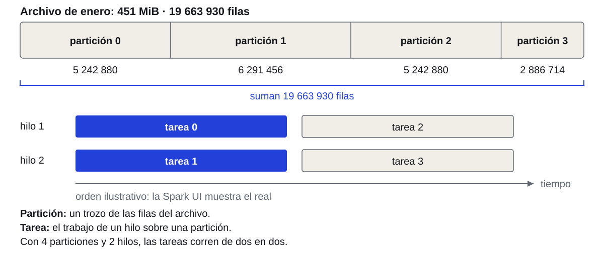
Más adelante contarás las filas de cada partición en el notebook 02.
Problema: ¿cómo se reparte un archivo entre hilos? Dos cosas distintas deciden el reparto y ninguna la decides tú. El número de particiones sale de los bytes: Spark corta el Parquet en trozos de hasta spark.sql.files.maxPartitionBytes (128 MiB) y, si la máquina tiene varios núcleos para repartir, en trozos más pequeños; con 2 núcleos, los 451 MiB de enero dan 4 particiones. Los grupos de filas internos del Parquet, de 1 048 576 filas cada uno, deciden qué filas caen en cada partición: un grupo no se parte, y por eso 5 242 880 es 5 × 1 048 576 y 6 291 456 es 6 × 1 048 576, salvo la última, que se lleva el resto. Así salen 5 242 880, 6 291 456, 5 242 880 y 2 886 714 filas, que suman 19 663 930 (clase05_medidas.md). Con 2 hilos corren dos tareas a la vez y las otras dos esperan turno; el orden que dibuja el diagrama es ilustrativo y el real se ve en la Spark UI. Abre ahora el enlace de la Spark UI que imprimió la Celda 5: la pestaña Jobs está vacía porque Spark todavía no ha hecho nada, y se irá llenando. La tabla con las filas de cada partición la produces tú en las Celdas 6 y 7 del notebook 02 (slide 25). Qué resuelve: paralelismo sin que tú decidas los trozos. Qué no: el número de particiones no es el de hilos; si hay más, las tareas esperan en grupos, y si hay menos, algunos hilos se quedan sin trabajo. Tiempo: 3 min. Siguiente: conocer las tres fuentes de datos con un registro real de cada una.
La TLC, regulador de taxis de NYC, publica los viajes en Parquet, un formato que guarda por columnas
Celdas 6 y 7 · bronze, la primera capa del lake · 451 MiB · 19 663 930 filas
Su fecha define el día de la lluvia.
Fuente: notebook 01, sección 1.1, y el diccionario de datos FHVHV de la TLC. FHVHV significa High Volume For-Hire Vehicles: vehículos de alquiler con conductor de alto volumen, es decir Uber, Lyft y similares. Problema: antes de transformar hay que saber qué trae cada columna; casi todos los errores de un pipeline empiezan por suponer algo equivocado sobre los datos. El archivo tiene 24 columnas y la slide muestra seis, las que importan para la pregunta; la propina (tips) no cabe en pantalla y en este viaje vale 0.0. Es el primer viaje de enero: licencia HV0003 (Uber; HV0005 es Lyft), recogida el 2024-01-01 a las 00:28:08 en la zona 161, 2.83 millas, 2251 segundos y tarifa base de US$45.61. Bronze es la primera capa del lake, la que guarda cada fuente tal como llega; después vienen silver y gold (slide 35). Un detalle del diccionario: on_scene_datetime es la hora en que el conductor llegó al punto de recogida, no la llegada del viaje, y viene nula en muchos viajes. Parquet guarda cada columna por separado y el esquema dentro del archivo, por eso Spark puede leer solo las columnas que pidas. Ruta completa: s3://bigdata-lake-<cuenta>-us-east-2/bronze/_crudo/fhvhv/mes=2024-01/fhvhv_tripdata_2024-01.parquet; si tu lake aún tiene el diseño anterior, bronze/fhvhv/mes=2024-01/ (la Celda 3 prueba las dos). Tamaño: 451 MiB (450.9 MiB; el notebook 01 escribe «451 MB») y 19 663 930 filas (clase05_medidas.md). Practica: Celda 6 (printSchema: 24 columnas; los tiempos son timestamp_ntz, fecha y hora sin zona) y Celda 7 (limit(1).show(vertical=True): un viaje, una columna por línea). Esta ruta es la del bronze del pipeline, sin carpeta lote=; el lab guarda el crudo dentro de su lote, como muestra la slide 35. Tiempo: 4 min. Siguiente: la tabla que traduce el número de zona en un nombre.
Una tabla CSV, texto separado por comas, traduce cada número de zona en un nombre
Celda 8 · bronze/_crudo/taxi_zones/taxi_zone_lookup.csv · 265 filas
Llega como texto y no se repite.
Es el distrito de la ciudad.
Es la zona de servicio de la TLC.
Fuente: notebook 01, sección 1.2. Problema: el viaje dice «recogido en la zona 161», un número que no significa nada para quien lee un informe. La TLC publica una tabla de consulta (lookup) en CSV, de 265 filas y 4 columnas. Una fila real: 132, Queens, JFK Airport, Airports. Un CSV no guarda tipos: todo llega como texto, incluso LocationID, y esa diferencia entre «parece un número» y «es un número» se paga más adelante: ordenar como texto da 1, 10, 100, 101 (slide 15 y Celda 20). Las zonas 264 y 265 son zonas especiales de la TLC. Ruta: s3://bigdata-lake-<cuenta>-us-east-2/bronze/_crudo/taxi_zones/taxi_zone_lookup.csv. Practica: Celda 8; debe mostrar cuatro columnas string y 265 filas. Esta ruta es la del bronze del pipeline, sin carpeta lote=; el lab guarda el crudo dentro de su lote, como muestra la slide 35. Tiempo: 4 min. Siguiente: la tercera fuente, el clima.
El clima llega como un JSON, un texto con listas paralelas, no como una fila por día
{
"daily": {
"time": ["2024-01-01", "2024-01-02", "2024-01-03", ...],
"precipitation_sum": [0.0, 0.0, 0.0, ...],
"temperature_2m_mean": [3.4, -0.0, 1.5, ...]
}
}
# bronze/_crudo/clima/mes=2024-01/open_meteo_2024-01.json · 31 valores
Open-Meteo, servicio de clima, da lluvia en mm y temperatura en °C. El 1 de enero es la posición 0 de cada lista. Celda 9.
Fuente: notebook 01, sección 1.3. Open-Meteo ofrece una API de archivo histórico: se le piden unas fechas y unas coordenadas y devuelve la lluvia total y la temperatura media de cada día. La respuesta no trae una fila por día: trae un solo objeto con tres listas paralelas dentro de daily, y la posición 0 de cada lista es el primer día (el 1 de enero: 0.0 mm y 3.4 °C). precipitation_sum incluye la nieve derretida: es precipitación, no solo lluvia. Para cruzarla con los viajes hay que aplanarla con posexplode, que convierte cada posición en una fila y conserva el número de posición para buscar el mismo día en las otras dos listas; así salen 31 filas en enero. Con esto quedan claras las dos uniones del lab de silver de la clase 6: los viajes se unen con las zonas por el número de zona (PULocationID = LocationID) y con el clima por la fecha de pickup_datetime. Ruta: s3://bigdata-lake-<cuenta>-us-east-2/bronze/_crudo/clima/mes=2024-01/open_meteo_2024-01.json. Practica: Celda 9; muestra el esquema del JSON (daily de tipo struct con tres arrays) y las 31 filas aplanadas. Esta ruta es la del bronze del pipeline, sin carpeta lote=; el lab guarda el crudo dentro de su lote, como muestra la slide 35. Tiempo: 4 min. Siguiente: las operaciones de la API de DataFrames sobre estos datos.
Con tres métodos ves el esquema, eliges columnas y creas columnas nuevas
from pyspark.sql import functions as F # F reúne las funciones de columna
viajes.printSchema() # nombres y tipos de las columnas
viajes.limit(1).show(vertical=True) # un viaje, una columna por línea
viajes_base = viajes.select("pickup_datetime", "trip_time", "tips")
paso_1 = viajes_base.withColumn("duracion_min", F.col("trip_time") / 60)
paso_1.show(3)
Un DataFrame es la tabla de Spark: cada método devuelve otro y deja intacto el anterior. Celdas 6, 7, 12 y 14.
Fuente: notebook 01, secciones 2, 3 y 4. Problema: un DataFrame no es una tabla en memoria sino un plan para producirla; mirar es la forma de comprobar que el plan hace lo que crees. Idea: tres métodos de uso diario. printSchema da columnas y tipos; limit(1).show(vertical=True) muestra un viaje sin leer el archivo completo; select elige columnas (y como Parquet es columnar, Spark no lee las demás); withColumn agrega una columna con una expresión. Ningún DataFrame se modifica: cada paso devuelve otro. Celda 10: show, limit, columns y printSchema. Celda 12: select, con tres formas de nombrar una columna, y drop. Celda 14: cinco withColumn en cinco pasos; trip_time viene en segundos, por eso se divide entre 60. Celda 15, para el cambio de tipo: cast(«int») trunca hacia cero en lugar de redondear, y un cast imposible da null en vez de fallar. Qué no resuelve: nada de esto ejecuta trabajo pesado todavía; eso es la slide 19. Tiempo: 3 min. Siguiente: filtrar, agrupar y ordenar.
Filtrar, agrupar y ordenar reducen los viajes a tablas pequeñas, y los nulos se detectan con isNull
# Cada condición va entre paréntesis; & significa «y» y | significa «o».
largos = viajes.where((F.col("trip_miles") > 10) & (F.col("tips") > 0))
# Un nulo no es igual ni distinto a nada: se detecta con isNull.
sin_llegada = viajes.where(F.col("on_scene_datetime").isNull())
por_empresa = (viajes.groupBy("hvfhs_license_num")
.agg(F.count(F.lit(1)).alias("viajes"))
.orderBy(F.desc("viajes"))) # se ordena al final, sobre pocas filas
una_por_empresa = viajes.dropDuplicates(["hvfhs_license_num"])
where deja las filas que cumplen la condición; groupBy y agg resumen cada grupo en una fila. Celdas 17, 18, 21 y 23.
Fuente: notebook 01, secciones 5, 6 y 7. where (o filter) devuelve las filas que cumplen una condición; cada condición va entre paréntesis porque en Python & y | se evalúan antes que las comparaciones, y no se pueden usar and, or ni not. Los nulos: un null significa «dato desconocido»; compararlo con cualquier cosa, incluso con otro null, da desconocido, y un filtro descarta las filas desconocidas. Por eso col != valor no devuelve las filas con nulo. En la Celda 18, sin hora de llegada más con hora de llegada suman el total, y el conteo con != es menor. groupBy con agg convierte 19 millones de viajes en una tabla que cabe en pantalla: la Celda 23 da una fila por empresa (HV0003, Uber, y HV0005, Lyft, en enero) con viajes, tarifa y propina promedio. orderBy ordena (F.desc, de mayor a menor) y conviene hacerlo al final, sobre esas pocas filas, que es la forma barata de ordenar; en la Celda 20, ordenar LocationID como texto da 1, 10, 100, y como número da el orden que esperas. dropDuplicates con una lista de columnas deja una fila por cada valor de esas columnas, y cuál se conserva no está garantizado (Celda 21); el lab de silver de la clase 6 lo usa para quitar los duplicados. Celda 17: where con &, | y ~. Tiempo: 3 min. Siguiente: unir con las zonas.
Unir con las zonas da nombre a cada viaje, pero una llave repetida multiplica las filas sin avisar
zonas_tipadas = zonas.withColumn(
"LocationID", F.col("LocationID").cast("int")) # el CSV llega en texto
condicion = viajes["PULocationID"] == zonas_tipadas["LocationID"]
# left conserva todos los viajes, aunque no encuentren su zona.
viajes_con_zona = viajes.join(zonas_tipadas, condicion, "left")
# La llave de la tabla pequeña no debe repetirse: debe imprimir 0.
repetidas = (zonas_tipadas.groupBy("LocationID").count()
.where(F.col("count") > 1).count())
print(repetidas)
Con JFK repetido sobraron justo los viajes de JFK, sin ningún error. Por eso antes de unir se comprueba la llave. Celdas 25 y 26.
Fuente: notebook 01, sección 8. Problema: el join hace lo que le pides, aunque lo que pides esté mal. Un left join conserva todas las filas del lado izquierdo y deja null donde no hay pareja; left_anti devuelve solo los viajes sin zona. Con una tabla de zonas donde JFK (132) aparece dos veces, el resultado creció exactamente en los viajes de JFK de la muestra, sin ningún error: la cardinalidad se rompió en silencio (Celda 26). Por eso, antes de unir, se comprueba que la llave del lado pequeño no se repite. Celda 25: «Llaves repetidas en zonas: 0», los viajes antes y después del left join son iguales y el left_anti cuenta los que no encontraron zona. Esta comprobación vuelve en el lab de silver de la clase 6, cuando se unen las zonas. Celda 27: viajes por distrito, con N/A (zona 265, fuera de NYC) y EWR, el aeropuerto de Newark. Qué no resuelve: no decide por ti el tipo de join ni si la llave es única. Es el mismo mecanismo que duplica los viajes si una ingesta se repite (slide 33). Tiempo: 3 min. Siguiente: lo mismo, escrito en SQL.
Spark también ejecuta SQL: registras la tabla con un nombre y escribes la misma consulta
viajes.createOrReplaceTempView("viajes") # el nombre que verá el SQL
zonas_tipadas.createOrReplaceTempView("zonas")
por_distrito_sql = spark.sql("""
SELECT z.Borough AS Borough, COUNT(*) AS viajes
FROM viajes v
LEFT JOIN zonas z ON v.PULocationID = z.LocationID
GROUP BY z.Borough
ORDER BY viajes DESC
""")
por_distrito_sql.show()
El resultado es igual al de groupBy y join, con cero filas de diferencia. SELECT, WHERE y GROUP BY equivalen a select, where y groupBy. Celda 29.
Fuente: notebook 01, sección 9. Quien ya sabe SQL puede empezar a trabajar con Spark desde el primer día, y los dos estilos se mezclan en el mismo programa. createOrReplaceTempView registra el DataFrame con un nombre que solo existe para el SQL (viajes y zonas son nombres de la vista, no variables de Python); spark.sql devuelve otro DataFrame. La Celda 29 compara las dos versiones con exceptAll en las dos direcciones y debe imprimir 0. Equivalencias: SELECT con select, WHERE con where y &, GROUP BY con groupBy y agg, ORDER BY x DESC con orderBy(F.desc(«x»)), LEFT JOIN con join(..., «left»), CASE WHEN con F.when(...).otherwise(...), LIMIT con limit. Qué resuelve: reutilizar lo que ya sabes de SQL. Qué no: no cambia lo que Spark hace por dentro, que es lo que sigue de la slide 19 en adelante. Tiempo: 2 min. Siguiente: practicar con los ejercicios del notebook.
Cinco ejercicios «Pruébalo tú» fijan lo visto antes de ver cómo ejecuta Spark
Resuelve las Celdas 16, 19 y 22 del notebook 01.
Resuelve las Celdas 24 y 28.
Si te sobra tiempo, resuelve las Celdas 11, 13 y 30.
Trabajo individual de 14 minutos; la slide queda proyectada y la única ayuda es el instructor. Cada sección del notebook 01 termina con «Pruébalo tú». Los cinco obligatorios son los que necesitará el lab de silver y gold de la clase 6: Celda 16 (velocidad_mph redondeada a un decimal, con withColumn), Celda 19 (viajes que empiezan y terminan en la misma zona y con propina, con where y &), Celda 22 (los cinco viajes con mayor propina, con orderBy), Celda 24 (viajes y propina promedio por zona de recogida, con groupBy) y Celda 28 (las cinco zonas de destino con más llegadas, con join). Los opcionales: Celda 11 (10 filas del clima sin cortar el texto, más cuántas columnas tiene), Celda 13 (hora de recogida, zona de recogida, zona de destino y propina, cinco filas) y Celda 30 (las cinco zonas de recogida, escritas en SQL). Cada una se resuelve con una o dos líneas; la solución está en un bloque desplegable debajo y se abre solo después de intentarlo. Recorre el salón: quien se atasca en una condición suele tener mal un paréntesis (el error 3 de la slide 23). Si alguien termina antes, que haga los opcionales: con los 14 minutos alcanza para los cinco obligatorios y al menos uno opcional. Tiempo: 14 min. Siguiente: por qué definir un paso tarda milésimas y contar tarda segundos.
Spark es perezoso: las transformaciones solo anotan el plan y las acciones lo ejecutan
v = spark.read.parquet(str(RUTA_DIR_ENERO)) # solo el esquema, no las filas
v = v.where(F.col("PULocationID") == 132) # transformación
v = v.select("pickup_datetime", "base_passenger_fare") # transformación
v = v.withColumn("tarifa_centavos", F.col("base_passenger_fare") * 100)
# Los cuatro pasos de arriba tardaron entre 0.01 y 0.22 s: no leyeron filas.
n = v.count() # acción: aquí se lee el archivo; tardó 1.58 s
show, count, collect, toPandas y write son acciones; select, where, withColumn y groupBy son transformaciones. Celda 31.
Problema: si cada paso se ejecutara al instante, Spark leería 19.6 M de filas para filtrar, escribiría el resultado, lo volvería a leer para seleccionar columnas y así sucesivamente. Idea de ingeniería: separar describir de ejecutar. Las transformaciones agregan un paso al plan y devuelven otro DataFrame al instante; las acciones piden un resultado y obligan a ejecutar todo el plan. Así Spark ve el plan completo antes de tocar un dato, que es lo que aprovecha la slide 28. spark.read.parquet no es una transformación en sentido estricto: crea el DataFrame y lee el esquema del pie del archivo, y de ahí salen los 0.22 s. Celda 31, medida en el Code Editor (clase05_medidas.md): definir los cuatro pasos tardó entre 0.01 y 0.22 s y el count() tardó 1.58 s, con 374 293 viajes desde la zona 132. Los errores de nombre de columna y de tipo se detectan al definir el paso; los que dependen de los datos o de los archivos solo aparecen en la acción. Celda 32 («Pruébalo tú»): antes de ejecutarla, escribe en un comentario cuáles de sus cuatro líneas crees que van a tardar; la única es la que tiene collect(). Tiempo: 3 min. Siguiente: qué cuesta traer filas al driver.
show imprime pocas filas; collect y toPandas traen todas al driver
– Traen pocas filas: show las imprime y take las devuelve.
– Traen todas las filas al driver, que aquí tiene 2 GB de memoria.
Fuente: notebook 01, sección 11. El driver es el único proceso que coordina a Spark y en esta máquina tiene 2 GB. show imprime n filas (20 si no pones n) y trae a Python solo esas filas, ya convertidas en texto; take, head y first traen unas pocas filas como objetos Row, que se leen por nombre. collect trae todas las filas como una lista de Row; toPandas las trae como un DataFrame de pandas, la librería de Python para tablas en memoria, y termina en el proceso de Python, fuera de los 2 GB de Java; limit(n) no trae nada: devuelve otro DataFrame de Spark con n filas. Spark procesa archivos más grandes que su memoria porque los reparte, pero en cuanto pides los datos de vuelta todo se junta en un solo proceso. Regla de ingeniería: al driver se traen resultados, no datos. Celda 33: take, collect del resumen por distrito y dos toPandas, con cifras que ves en la slide siguiente. Tiempo: 2 min. Siguiente: las cifras de esa diferencia.
para traer un millón de filas crudas. El resumen de 262 zonas: 2.0 s calculado y traído; 0.08 s ya calculado.
Code Editor, 16 nov. 2026; notebook 01, Celda 33
Cifras medidas en el Code Editor el 16 nov. 2026; son las que citan el texto de la Celda 33 del notebook 01, que el grupo acaba de ejecutar, y el de la Celda 22 del notebook 02: toPandas de 1 000 000 de filas de dos columnas tardó 8.6 s y ocupó 11.4 MB. Para el resumen de 262 zonas hay dos tiempos distintos y no se deben mezclar: calcularlo desde cero sobre los 19.6 M de viajes y traerlo tardó 2.0 s, y traerlo cuando ya estaba calculado tardó 0.08 s, porque Spark conserva los archivos del shuffle y no repite la etapa de agregación. El tiempo del millón de filas incluye leer en Spark además de pasar los datos al driver, y Arrow no está activado (engine.py no lo configura), lo que encarece toPandas. Ese millón de filas son dos columnas y apenas el 5 % del mes: con las 24 columnas y las 19 663 930 filas el tiempo y la memoria se multiplican hasta que el kernel se cae. Si pasa («Kernel died» u OutOfMemoryError: Java heap space), reinicia el kernel y no ejecutes toPandas sobre datos crudos; en los labs usa siempre una muestra. La diferencia entre las dos líneas es el argumento: el resumen ya trae el trabajo hecho y por eso es pequeño. Celda 34 del notebook 01 («Pruébalo tú»): trae a pandas el resumen por distrito y agrega una columna porcentaje, redondeada a un decimal. Tiempo: 2 min. Siguiente: siete funciones de columna que usarás en los labs.
Siete funciones de columna bastan para los labs de las clases 5 y 6
F.coalesce(c, F.lit("<nulo>")) # usa «<nulo>» si c es nula
F.concat_ws("||", c1, c2) # une textos con un separador
F.sha2(c, 256) # el hash es la huella de c
F.concat(F.lit("Zona "), c.cast("string")) # une; un nulo da nulo
df.join(F.broadcast(zonas), "id", "left") # copia zonas a cada ejecutor
df.dropDuplicates(["_hash_fila"]) # deja una fila por hash
df.orderBy(F.desc("tips")) # ordena de mayor a menor
Hoy usas las tres primeras; la clase 6 usa las demás. Ejecuta las Celdas 31 a 46 y haz los «Pruébalo tú» de las Celdas 36, 38 y 40.
Problema: los labs te piden escribir lógica del pipeline, y si además tienes que buscar sintaxis no te queda atención para pensar. Hoy el ejercicio 1 usa coalesce, lit, concat_ws y sha2; broadcast, concat, dropDuplicates y orderBy son del lab de silver y gold de la clase 6. La sección 12 del notebook 01 presenta, una por una, las funciones que los labs usan; cada ejemplo trae su «Pruébalo tú». F.coalesce devuelve la primera columna que no es nula y F.lit convierte un valor fijo en una columna (Celdas 35 y 36; el ejemplo usa on_scene_datetime, que viene nula en muchos viajes, como contó la Celda 18). F.concat_ws une textos con un separador y salta los nulos, sin dejar hueco (Celdas 37 y 38): por eso la huella reemplaza los nulos antes de unir. F.sha2(c, 256) calcula el hash, la huella SHA-256 de un texto: 64 caracteres hexadecimales, siempre los mismos para el mismo texto y otros completamente distintos si cambia una letra (Celdas 39 y 40). F.concat une sin separador y, a diferencia de concat_ws, si una columna es nula el resultado es nulo; con F.coalesce arma nombres como «Zona 9999» (Celdas 41 y 42). F.broadcast pide copiar un DataFrame pequeño a cada ejecutor antes de un join (Celdas 43 y 44; la tabla debe caber en el driver y en cada ejecutor; el porqué llega en la slide 31). dropDuplicates y orderBy (Celdas 45 y 46) dejan una fila por cada valor de una llave y ordenan. Los obligatorios son los que usa el ejercicio 1 del lab de hoy: coalesce y lit (36), concat_ws (38) y sha2 (40). Los de concat (42), broadcast (44) y orderBy (46) son opcionales hoy: los usará el lab de la clase 6. Reparto del tiempo: unos 6 minutos para practicar y el resto para leer los ejemplos; quien termine antes puede hacer los opcionales. Tiempo: 7 min. Siguiente: cómo depurar cuando algo falla.
Depuras por pasos y lees el error desde arriba
En las Celdas 47 a 49 pruebas por pasos, con una muestra.
En la Celda 50 lees la clase del error.
En las Celdas 52, 54 y 56 corriges tres errores.
Problema: en un pipeline casi nunca falla algo con un mensaje claro: el código corre, no lanza error y el resultado está mal. Idea de ingeniería: cuatro hábitos que hacen visibles los problemas antes de que se acumulen. (1) Escribir el cálculo en pasos con nombre y (2) mirar el resultado de cada paso con la función mirar (Celda 47). (3) Probar sobre una muestra pequeña, 0.1 % de enero (Celda 48), y solo después sobre todo enero (Celda 49). (4) Leer el error de Spark (la Celda 50 provoca el de la columna PULocation): la clase, por ejemplo AnalysisException, dice en qué fase falló, y esta significa que Spark revisó el plan antes de leer datos; el código entre corchetes ([UNRESOLVED_COLUMN.WITH_SUGGESTION]) es lo que se busca en la documentación; la frase siguiente dice qué pasó y suele traer una sugerencia; el resto es el plan interno y al principio se ignora. Un Py4JJavaError trae lo útil en la línea «Caused by:». Tres errores para arreglar: columna mal escrita (Celdas 52 y 53), tipo que no sirve para la operación (Celdas 54 y 55) y & sin paréntesis (Celdas 56 y 57); la Celda 51 define comprobar y cada prueba debe decir OK. Trabajo individual de 6 minutos: si el grupo va lento, que arreglen el primero y el tercero. Qué no resuelve: ningún hábito reemplaza una prueba escrita; el lab trae una por ejercicio. Al terminar, la Celda 58 ejecuta spark.stop(). Tiempo: 6 min. Siguiente: lo que Spark hace por dentro, en el notebook 02.
Seguimos con el notebook 02: cómo reparte Spark el trabajo
– Particiones y tareas.
– pandas, Spark y Snowflake.
– Shuffle, broadcast y ventanas.
– Sabes cuándo Spark mueve datos y cuánto cuesta.
NOTEBOOK 02_como_funciona
Transición al segundo notebook. Di en voz alta: ya sabes usar Spark; ahora continuamos con el notebook 02_como_funciona para ver qué hace por dentro. Vamos a contar las filas de cada partición, comparar pandas, Spark y Snowflake sobre los mismos datos, y leer el plan de ejecución para reconocer el shuffle, el broadcast y las ventanas, con tiempos medidos. El objetivo es que, al ver un plan, sepas cuándo Spark mueve datos entre particiones y por qué eso cuesta; lo vas a necesitar para entender las decisiones del pipeline. La slide siguiente dice cómo cerrar el 01 y abrir el 02. Tiempo: 1 min.
Para mirar dentro de Spark, cierras el notebook 01 y abres el 02
En el 01, ejecuta la Celda 58: cierra Spark.
Abre 02_como_funciona y ejecuta las Celdas 1 a 5.
Las Celdas 6 y 7 cuentan filas por partición.
NOTEBOOK 02_como_funciona
Solo cabe un proceso de Spark a la vez en esta máquina: la Celda 58 del notebook 01 ejecuta spark.stop(); si no, el segundo notebook se queda esperando o falla por memoria. Abre tu copia de 02_como_funciona, elige el kernel Python (bigdata) y ejecuta las Celdas 1 a 5, que son las mismas de preparación del 01 (la descarga ya no se repite y Spark enciende en 7 a 10 s). Celda 6: cuenta las particiones que Spark forma para enero (4) e imprime maxPartitionBytes (128 MiB) y las tareas que pueden correr a la vez (2). Celda 7: filas por partición, 5 242 880, 6 291 456, 5 242 880 y 2 886 714, que suman 19 663 930 (clase05_medidas.md). El número de particiones sale de los bytes del archivo, y los grupos de filas del Parquet deciden qué filas caen en cada una (slide 10). Con la Spark UI abierta en Jobs verás el trabajo que acabas de lanzar y, dentro, una tarea por partición. Tiempo: 2 min. Siguiente: la misma pregunta respondida con tres motores.
Con tres columnas los motores coinciden y ninguno gana en una máquina
7.8 s en SQL, 4.9 s en DataFrame; encender: 7 a 10 s
NOTEBOOK 02_como_funciona
Fuente: notebook 02, sección 2; clase05_medidas.md (Code Editor, 15 nov. 2026, 2 vCPU y 7.6 GB). La misma pregunta sobre el mismo archivo de enero: viajes e ingreso (tarifa base) por zona de recogida y día. pandas es la librería de Python que carga la tabla en la memoria de un solo proceso; Snowflake es un almacén de datos en la nube. pandas y Spark leen el archivo del disco local, que vino de tu bucket; Snowflake lo lee del bucket público del curso, que tiene el mismo archivo (s3://bigdata-udem-2026-publico/paquete/bronze/fhvhv/mes=2024-01/), sin credenciales. Resultado: los tres dan 8 006 grupos, 19 663 930 viajes e ingreso 471 132 933.49: COINCIDEN (Celda 13); si no coincidieran, comparar tiempos no tendría sentido. Cómo leer los tiempos, con su contexto. pandas: 5.7 s (leer tres columnas 0.7, convertir 0.3 y agrupar 4.7), con un pico de 2.64 GB. Spark: la consulta en SQL tardó 7.8 s y la de DataFrames 4.9 s, pero esa diferencia no viene de la API: las dos producen el mismo plan físico (en la Spark UI, pestaña SQL / DataFrame, los dos diagramas son iguales) y la segunda corrió con la máquina virtual de Java y la caché de disco ya calientes; si repites la Celda 11, los dos tiempos se parecen. Encender Spark suma además 7.1 a 10.2 s que no están en esas cifras. Snowflake con un warehouse XS: 10.9 s con el lector vectorizado, que incluye leer 451 MiB por la red. Conclusión: con tres columnas y un mes, los tres motores dan el mismo resultado en tiempos del mismo orden y en una sola máquina ninguno gana con claridad; con el arranque, Spark tarda más, y sin él la diferencia con pandas (0.8 s) no sostiene una conclusión. En tu máquina los tiempos serán otros. Celda 8 (rango de fechas), Celda 9 (pandas), Celda 10 (el año, slide siguiente), Celda 11 (Spark SQL y DataFrames), Celda 12 (Snowflake; fija USE ROLE ACCOUNTADMIN y USE WAREHOUSE COMPUTE_WH), Celdas 13 y 14 (comparación y cierre del cursor). Si la Celda 12 falla: «Could not find connection 'default'» (cd ~/bigdata && make snowflake-conexion) o «Database 'CURSO' does not exist» (cambia SF_BASE o avisa al instructor); el resto del notebook sigue funcionando. Tiempo: 4 min. Siguiente: por qué Spark importa aunque aquí no gane.
Con el año, pandas no cabe en 7.6 GB; Spark lo procesa por partes y escala a Glue
Enero, 3 columnas, medido
Año, 3 columnas, estimado
NOTEBOOK 02_como_funciona
Problema: ¿qué pasa cuando la pregunta pide el año completo? Fuente: notebook 02, sección 2.2; clase05_medidas.md. Medido: pandas con tres columnas de enero tuvo un pico de 2.64 GB (Celda 9). Estimado por aritmética, no medido (Celda 10): ese pico por la razón entre los viajes del año y los de enero, 2.64 × 239.5 / 19.66, da unos 32 GB para el año con las mismas tres columnas. La instancia tiene 7.6 GB de RAM y no tiene swap. El argumento no son las 24 columnas (nadie las pediría para esta pregunta; el notebook las imprime, pero no son el argumento): es el año con las columnas que la pregunta necesita. Tres salidas. Una máquina mucho más grande (escalar hacia arriba, con un costo que crece). Una herramienta que procese por partes dentro de una sola máquina: DuckDB o Polars también resolverían esta pregunta sobre el año sin salir de una sola máquina. Y Spark, que procesa partición por partición, escribe en disco lo que no cabe en memoria y tiene una ventaja que las otras no tienen: el mismo código escala sin cambios a Glue, donde los ejecutores son varias máquinas. Esa tercera razón, y no la velocidad en una sola máquina, es la que justifica Spark en este curso. Siempre queda además la defensa que ya usaste: no leer lo que no necesitas. Cuándo conviene cada motor: pandas, si los datos caben en memoria y la pregunta es corta; Spark, si es una cadena de transformaciones sobre archivos grandes que tiene que correr de forma repetible, que es un pipeline; Snowflake, si la pregunta es analítica, el dato ya vive allí y quieres cero infraestructura. Tiempo: 3 min. Siguiente: cómo Spark evita leer lo que no necesita.
Spark mira el plan completo y lee solo las columnas y filas que la pregunta necesita
base_v = spark.read.parquet(str(RUTA_DIR_ENERO))
v = base_v.where(F.col("PULocationID") == 132)
v = v.select("PULocationID", "base_passenger_fare")
v.explain() # imprime el plan de ejecución, sin ejecutarlo
# En el plan, ReadSchema lista solo 2 de las 24 columnas del archivo.
# PushedFilters muestra el filtro PULocationID = 132 dentro de la lectura.
El plan es la lista de pasos que Spark armó. Leer 2 de 24 columnas y filtrar al leer ahorra trabajo. Celdas 15 a 17.
NOTEBOOK 02_como_funciona
Problema (notebook 02, sección 3): si cada paso corriera al instante habría lecturas y escrituras intermedias. Idea: Spark anota el plan y solo trabaja cuando le pides un resultado, y por eso puede mirar el plan entero antes de tocar un dato. explain() imprime el plan sin ejecutarlo, y se lee de abajo hacia arriba: la última línea es la lectura del archivo (FileScan parquet). Medido en el plan con filtro (clase05_medidas.md): PushedFilters con IsNotNull y EqualTo(PULocationID,132) y ReadSchema con 2 columnas, es decir, el filtro se empuja al lector del archivo y de 24 columnas se leen 2. La Celda 15 define los pasos (milisegundos, aunque el archivo pese 451 MiB), la Celda 16 ejecuta con count() y la Celda 17 imprime el plan con y sin filtro; la medición del count() ya la viste en la slide 19. Que un filtro se empuje no garantiza que se salte mucho: depende de cómo estén ordenados los datos dentro del archivo. Qué resuelve: leer menos. Qué no: los errores que dependen de los datos solo aparecen al ejecutar la acción. Tiempo: 4 min. Siguiente: qué operaciones se paralelizan sin comunicación y cuáles no.
Una transformación estrecha trabaja cada partición sola; una ancha mueve filas entre particiones: el shuffle
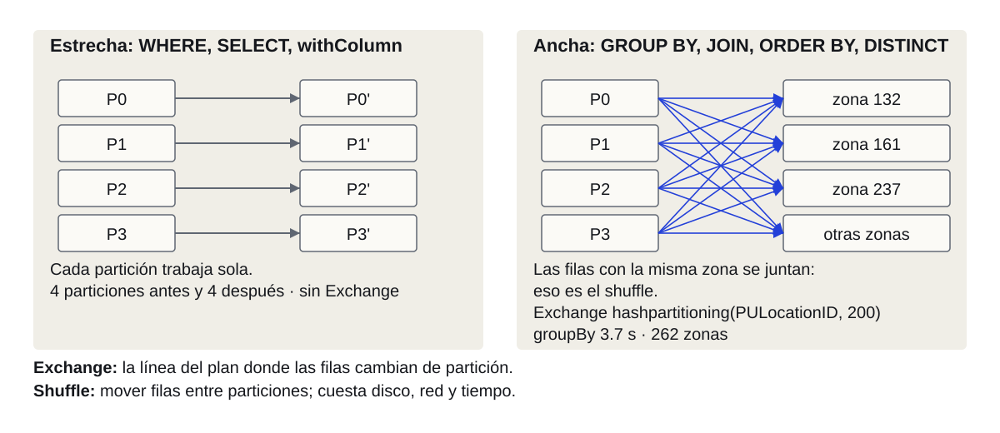
En la Celda 18 no hay Exchange; en la Celda 19 hay uno por zona.
NOTEBOOK 02_como_funciona
Problema (notebook 02, sección 4): casi todo el costo de un trabajo de Spark depende de una pregunta: para calcular esta fila, ¿hace falta mirar otras filas? Si no, la operación es estrecha (WHERE, SELECT, withColumn): cada partición de salida sale de una sola partición de entrada y escala sin comunicación. Si sí, es ancha (GROUP BY, JOIN, ORDER BY, DISTINCT): hay que juntar las filas con la misma clave, y moverlas entre particiones es el shuffle, que escribe a disco, envía y vuelve a leer; es lo más caro de Spark. En el plan se reconoce por la línea Exchange. Medido (clase05_medidas.md): la estrecha mantiene 4 particiones antes y después y no tiene Exchange (Celda 18); la ancha tiene Exchange hashpartitioning(PULocationID, 200), el groupBy tarda 3.7 s y devuelve 262 zonas (Celda 19; 200 es spark.sql.shuffle.partitions). La ejecución adaptativa (AQE, activa por defecto desde Spark 3.2) mira el tamaño real de los datos del shuffle y junta las particiones pequeñas, así que la etapa que lee el shuffle correrá menos de 200 tareas. En la Spark UI, Jobs > Stages, el Exchange es la frontera entre dos etapas; la primera escribe datos de shuffle y la segunda los lee. Tiempo: 4 min. Siguiente: por qué GROUP BY sí se paraleliza.
Para agrupar, cada partición resume primero y solo viajan los resúmenes
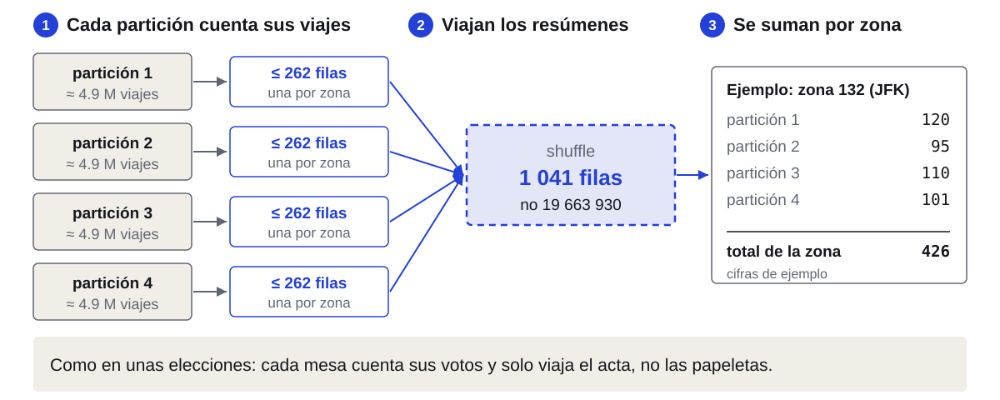
Celda 20: la etapa del shuffle escribió 1 041 filas de 19 663 930.
NOTEBOOK 02_como_funciona
Cómo contarlo: es un conteo de votos. Cada mesa (partición) cuenta sus propios votos y solo manda el acta (el resumen por zona); la registraduría (la segunda fase) suma las actas. Las cifras por partición de la zona 132 en el diagrama son de ejemplo; el 1 041 es medido. Puede parecer que agrupar obliga a mover los 19.6 M de filas. No: Spark agrupa en dos fases (Celda 20). Primero, cada partición agrega sus propias filas (HashAggregate con partial_count y partial_sum): de millones de filas queda una por zona y por partición. Solo esas filas parciales viajan por el shuffle. Segundo, después del Exchange, un segundo HashAggregate suma los parciales de cada zona. Medido (clase05_medidas.md): la etapa que escribió shuffle escribió 1 041 filas, frente a las 19 663 930 de entrada; la Celda 20 lo lee de la API de la Spark UI y lo imprime. El 1 041 sale de 4 particiones con hasta 262 zonas cada una (como máximo 1 048), y no todas las zonas aparecen en todas las particiones. Por eso COUNT, SUM, MIN y MAX escalan bien, y también AVG: Spark lo parte en una suma y un conteo parciales y divide al final. Qué no se parte así: una mediana exacta necesita ver todos los valores. La etapa que lee el shuffle usa tantas tareas como spark.sql.shuffle.partitions, o menos si la ejecución adaptativa junta las pequeñas. Tiempo: 3 min. Siguiente: cómo evitar el shuffle del lado grande en un join.
Broadcast copia las zonas a cada ejecutor y los viajes no se mueven: 2.96 s, no 8.27 s
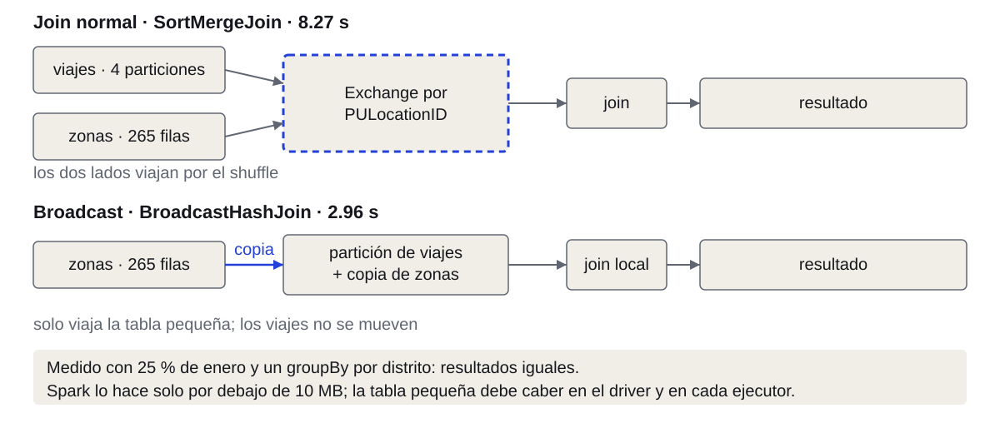
Notebook 02, Celda 23: 25 % de enero, resultados iguales.
NOTEBOOK 02_como_funciona
Cómo contarlo: en el join normal, cada viaje tiene que ir a la oficina (ejecutor) donde está su zona, y eso mueve millones de filas por la red. Con broadcast se fotocopia el directorio de zonas, que es pequeño, y se deja una copia en cada oficina: cada ejecutor une sus viajes sin moverlos. Problema (notebook 02, sección 5): unir 19.6 M de viajes con las 265 zonas con un join normal manda las dos tablas por un shuffle: se reparten por LocationID todos los viajes solo para encontrar el nombre de 265 zonas. Idea: copiar la tabla pequeña completa a cada ejecutor (broadcast) y que cada partición de viajes resuelva el join localmente, sin mover ninguna fila de viajes. La Celda 23 apaga el broadcast automático (spark.sql.autoBroadcastJoinThreshold = -1) para comparar de forma justa, usa 25 % de enero con un groupBy por distrito y al final restaura el umbral. Medido (clase05_medidas.md): SortMergeJoin con dos Exchange, 8.27 s; BroadcastHashJoin con un BroadcastExchange, 2.96 s; resultados iguales. Qué no resuelve: si la tabla «pequeña» no cabe en la memoria de cada ejecutor, el broadcast falla o satura la memoria. Por eso Spark solo lo aplica de forma automática cuando estima que la tabla mide menos de 10 MB. Esa estimación puede fallar, y por eso silver.py lo pide de forma explícita con F.broadcast; pedirlo explícito tiene un costo: el umbral deja de protegerte, y si la tabla crece, el riesgo es tuyo. Esa es la decisión de unir_zonas, en el lab de silver de la clase 6. Tiempo: 4 min. Siguiente: dos lugares donde Spark vuelve a trabajar como una sola máquina.
Una ventana numera filas dentro de cada grupo; sin PARTITION BY, una sola tarea carga con todas
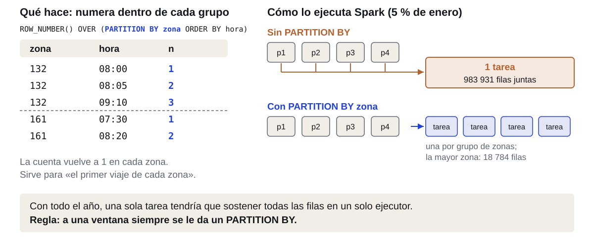
Notebook 02, Celda 21, sobre 5 % de enero.
NOTEBOOK 02_como_funciona
Por qué está aquí: después del shuffle (slide 29) y del broadcast (slide 31), este es el caso en que Spark deja de repartir. Primero se explica qué es una función de ventana con la tabla de la izquierda: ROW_NUMBER numera las filas de cada grupo en el orden que se le pide, y la cuenta vuelve a 1 cuando cambia la zona; sirve para preguntas como el primer viaje de cada zona. Las horas de la tabla son de ejemplo. Después, cómo la ejecuta Spark, con la medición real. Fuente: notebook 02, sección 4.4. Una ventana como ROW_NUMBER() OVER (ORDER BY pickup_datetime) numera las filas dentro de un grupo y necesita ordenarlas todas juntas; sin PARTITION BY, Spark no tiene por dónde partir y mueve todo a una sola partición: en el plan aparece Exchange SinglePartition y en el registro, la advertencia «Moving all data to a single partition». Medido sobre una muestra de 5 % (Celda 21; clase05_medidas.md): 983 931 filas numeradas en una partición, 4.3 s; con PARTITION BY zona, la partición mayor tuvo 18 784 filas y tardó 4.7 s. Los tiempos son parecidos porque la muestra es pequeña; lo que cambia es que una sola tarea tiene que sostenerlo todo, y con los 19.6 M de filas una sola tarea de un solo ejecutor sostendría todas las filas; en un clúster ese ejecutor es una máquina, sin importar cuántas haya, y aquí vive dentro del proceso de 2 GB. El otro lugar donde todo se junta es traer filas crudas con collect o toPandas (Celda 22; slides 20 y 21). La regla de las situaciones: estrecha, nada que hacer; ancha, reducir antes de mover; ventana, darle siempre una partición; toPandas, traer resultados. Las claves desbalanceadas y los archivos pequeños se miden en la clase 7. Tiempo: 4 min. Siguiente: descanso.
Si traes dos veces el mismo mes a tu bucket, ¿cuántas copias de cada viaje quedan?
Antes de salir, cierra Spark: Celda 24 del 02.
Descanso de 20 minutos. Antes de salir, pide ejecutar la Celda 24 del notebook 02, que cierra Spark: después del descanso se abre el 03_lab y en esta máquina solo cabe un Spark. Retoma el hilo: hasta aquí los datos eran archivos que ya estaban en tu disco; ¿cómo llegaron a tu bucket y qué pasa si se traen otra vez? Ingestar es traer datos de una fuente externa a tu almacenamiento. Si no hay cuidado, traer dos veces el mismo mes deja dos copias de cada viaje, y cualquier suma queda inflada sin ningún error: es el mismo mecanismo de la unión que repite filas (slide 16). Antes del descanso viste cómo se transforma; después, cómo se trae y se guarda lo que llega, y cómo se evita repetirlo. Pide a dos personas que den su respuesta mientras salen. Al volver, la respuesta tiene tres partes: cómo se diseña la primera capa, bronze (slides 35 a 37); cómo se detectan las filas repetidas (slides 39 a 41); y cómo se evita ingestar otra vez (slides 42 y 43). Tiempo: 20 min. Siguiente: el medallion y el diseño de bronze.
Continuamos con el notebook 03, el lab: construyes tu ingesta
– Bronze por dentro.
– URL, metadatos y hash.
– La tabla de control.
– Tu ingesta trae un mes sin repetir y pasa las pruebas.
Transición al lab, después de responder la pregunta del descanso. Di en voz alta: ahora continuamos con el notebook 03_lab, que es el lab de hoy. Primero vemos la teoría que necesitas: cómo se organiza bronze y por qué, cómo se pide cada fuente por su URL, qué metadatos lleva cada fila y cómo se calcula su hash, y la tabla de control que evita traer dos veces el mismo mes. Después escribes tú la ingesta. El objetivo es que al final de la clase tu función de ingesta traiga un mes de viajes, zonas y clima a tu bronze, con metadatos y sin repetir, y que las cuatro pruebas del notebook respondan OK. Tiempo: 1 min.
El medallion tiene tres capas; hoy llenas bronze, y cada ingesta escribe en tres pasos
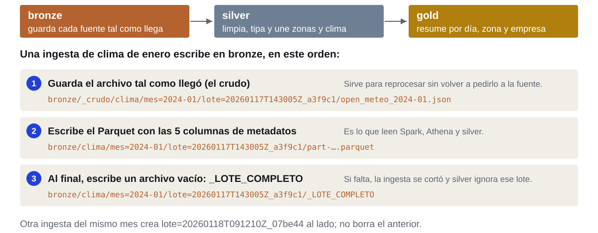
Las cinco columnas de metadatos del paso 2 se ven en la slide 39.
Los tres pasos del diagrama son lo que hace una ingesta, en orden: primero guarda el crudo, después escribe el Parquet y al final el marcador; las cinco columnas de metadatos se explican en la slide 39. Respuesta a la pregunta del descanso, en tres partes. Primera: si ingestas dos veces el mismo mes sin cuidado, en bronze quedan dos lotes, es decir, dos copias de cada viaje, porque cada ingesta crea un lote nuevo y nunca borra los anteriores. Segunda: silver no duplica, porque lee solo el lote completo más reciente (io.lote_mas_reciente). Tercera: la propia ingesta puede negarse a repetir un mes que ya trajo; es la tabla de control de las slides 42 y 43. Problema: si algo sale mal después, hay que poder reprocesar sin pedirle otra vez los datos a la fuente, y una reingesta no puede dejar copias de cada viaje en el resultado. Idea: el medallion, una arquitectura en tres capas según cuánto se transformaron los datos: bronze guarda cada fuente tal como llega; silver limpia y enriquece (tipos, viajes imposibles, duplicados, zonas y clima); gold resume por día, zona y empresa. Hoy escribes bronze; silver y gold son el lab de la clase 6. Bronze tiene dos partes. Una, el archivo crudo intacto, los mismos bytes que entregó la fuente, en bronze/_crudo/<fuente>/[mes=AAAA-MM/]lote=<id>/<archivo>. Dos, un Parquet por fuente y mes en bronze/<fuente>/[mes=AAAA-MM/]lote=<id>/, con las columnas originales más cinco de metadatos (slide 39). El crudo también se guarda por lote porque una fuente puede corregir un archivo entre dos descargas: si el crudo se sobrescribiera, el lote viejo perdería el archivo del que salió; con una copia por lote, cada Parquet conserva el crudo exacto que lo produjo y reprocesar no destruye nada. Un lote es la carpeta que crea cada ingesta. Su identificador es la fecha y la hora UTC de la ingesta más seis caracteres hexadecimales al azar, por ejemplo 20261117T143005Z_a3f9c1: empieza con la fecha, así que ordenar los identificadores como texto los ordena en el tiempo, y los seis caracteres evitan un choque entre dos ingestas del mismo segundo. El marcador _LOTE_COMPLETO es un archivo vacío que se escribe al final; un lote sin marcador quedó a medias y se ignora. Se usa un marcador propio porque Glue no siempre escribe el _SUCCESS de Spark. Los dos identificadores del diagrama son los de ejemplo del texto del notebook 03 (sección 2), no los de una corrida real. Aviso para el grupo: el bronze que hay hoy en tu bucket, el que leen los notebooks 01 y 02, todavía está en el formato anterior (el crudo sin carpeta de lote y sin metadatos); la ingesta del lab escribe el formato nuevo en el disco de esta máquina, y en la clase 6 el DAG lo escribirá en tu bucket. Tiempo: 4 min. Siguiente: las decisiones de diseño de bronze.
Bronze guarda el crudo y trae un mes por ejecución
¿Por qué guardar el crudo?
– La fuente puede corregir un mes; rehaces sin descargar.
¿Por qué un mes por ejecución?
– Así publica la TLC; si falla, repites solo ese mes.
Problema: guardar el crudo y traer un mes por vez parecen detalles, pero cada uno responde a una falla real. Primera decisión: ¿por qué guardar el crudo? Porque la fuente puede corregir o retirar un mes: si solo tienes el Parquet de bronze, que ya es una interpretación (columnas elegidas, tipos y cinco metadatos), no puedes volver a lo que la fuente entregó; con el crudo rehaces bronze sin descargar otra vez, y además queda la evidencia de lo que se entregó ese día. Descartado: guardar solo el Parquet. Segunda decisión: ¿por qué un mes por ejecución y no todo de una vez? Porque así publica la TLC, un archivo por mes, y así corre el DAG, una vez al mes. Si una ejecución falla, se repite solo ese mes y no toda la historia. La tabla de control también registra por mes. Y la historia se carga como un backfill, mes a mes: la misma función, con otro mes. Qué no resuelve: guardar el crudo cuesta almacenamiento, 451 MiB por el mes de enero de los viajes; se paga a cambio de poder rehacer. Tiempo: 2 min. Siguiente: cómo se nombran las carpetas de bronze.
Cada carpeta de bronze tiene su razón
– Llega por mes; muchos archivos pequeños leen lento.
– Spark, Athena y Snowflake lo leen como columna.
– Reprocesar no borra; silver lee el último.
Problema: los nombres de las carpetas parecen una cuestión de gusto, pero deciden qué tan rápido y con qué herramientas se lee bronze. ¿Por qué mes= y no año/mes/día? La carpeta sigue la unidad en que llega el dato: la TLC publica un archivo por mes. Partir por día sería abrir unas 365 carpetas al año con archivos pequeños, y medimos en el Code Editor, sobre una muestra de 197 535 filas, qué cuesta eso: leer 200 archivos tardó 1.38 s y leer 2 archivos, 0.41 s, unas tres veces más lento (clase05_medidas.md). Silver sí se parte por día, pickup_date=…, porque se consulta por fecha y ahí leer solo los días necesarios compensa. ¿Por qué nombre=valor? Porque Spark, Athena y Snowflake reconocen la carpeta mes=2024-01 como una columna llamada mes y pueden podar: leer solo las carpetas que cumplen el filtro y saltarse las demás sin abrirlas. ¿Por qué lote=? Porque cada ingesta crea una carpeta nueva y reprocesar no borra nada: el lote anterior sigue ahí, con su crudo, y silver lee el lote completo más reciente. Qué no resuelve: la poda solo ayuda si el filtro usa la columna de la carpeta; un filtro por otra columna igual abre todos los archivos. Tiempo: 2 min. Siguiente: cómo se consume cada fuente.
Cada fuente se pide con su propia URL, y el mes cambia una parte de ella
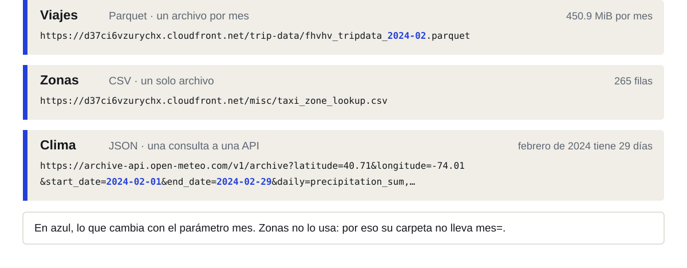
Notebook 03, Celda 6. Bajar y guardar enero (450.9 MiB) tardó 6.35 s.
Cómo contarlo: consumir una fuente es pedirle un archivo a un servidor por su URL. Señala en cada tarjeta la parte azul: es lo único que cambia cuando cambia el parámetro mes. Problema: antes de guardar nada hay que traerlo, y cada fuente se pide distinto. Consumir una fuente es pedirle sus datos a un servidor: el pipeline escribe una URL, el servidor responde con un archivo y el pipeline lo guarda. Los viajes de la TLC se publican como un archivo Parquet por mes y el mes va en el nombre; en el código es bronze.URL_VIAJES con el mes puesto. Las zonas son un solo CSV de 265 filas que no cambia por mes: no tienen mes, y por eso su carpeta no lleva mes=. El clima no es un archivo ya publicado sino una consulta a la API de archivo de Open-Meteo: la URL lleva la latitud y la longitud de NYC, el primer día (start_date) y el último (end_date) del mes, las dos variables diarias que se piden, precipitation_sum y temperature_2m_mean, y la zona horaria de NYC. Para pedir un mes hay que calcular su último día: bronze.url_clima(mes) usa ultimo_dia_mes, que respeta los meses de 28, 29, 30 y 31 días; febrero de 2024 termina el 29 porque 2024 es bisiesto. El mes siempre se escribe como texto AAAA-MM. Cifra medida: el archivo de enero pesa 450.9 MiB (19 663 930 filas) y la ingesta de prueba de enero, que descarga ese archivo completo y escribe 1 000 filas, tardó 6.35 s en el Code Editor (medición del autor, 16 nov. 2026). Ese peso y ese tiempo son la razón por la que la ingesta debe saber si un mes ya se trajo: descargarlo dos veces por descuido cuesta tiempo y le pide dos veces lo mismo al servidor. Practica: abre tu copia de 03_lab, elige el kernel Python (bigdata) y ejecuta las Celdas 1 a 4, en las que todavía no arranca Spark, y la Celda 6. La Celda 6 arma las tres URL de febrero de 2024, le pregunta al servidor cuánto pesa el archivo de viajes sin descargarlo (una petición HEAD pide solo el encabezado) y descarga el clima y las zonas, que son pequeños. Salida esperada: las tres URL, la línea «El archivo de viajes de 2024-02 pesa ... MiB (no se descargó)» (el peso de febrero no se midió) y el comienzo del JSON del clima, que termina el 2024-02-29; con mes = «2023-02» termina el día 28. Errores comunes: «HTTP Error 429» o URLError (Open-Meteo limita las peticiones o no hay red: espera un minuto y repite). Tiempo: 3 min. Siguiente: qué se agrega a cada fila al guardarla.
Cada fila de bronze lleva cinco columnas de metadatos que dicen cuándo y de dónde llegó
Clima del 1 de enero: fecha 2024-01-01 y lluvia_mm 0.0, más cinco metadatos
Problema: un archivo guardado sin más no dice cuándo llegó, de dónde vino ni si ya estaba. Idea: cada fila lleva, además de las columnas originales de la fuente, cinco columnas de metadatos que dejan escrito cuándo y de dónde llegó. El rótulo da las dos columnas originales del primer día del clima de enero (1 de enero, 0.0 mm) y la fila muestra las cinco columnas de metadatos que se les agregan; el clima tiene además la temperatura, que no cabe en la slide. En _fuente la slide escribe solo «la URL»: el valor real es la URL de Open-Meteo con las fechas del mes. _fecha_ingesta es el momento exacto, en UTC (la hora universal, sin cambios por zona ni por horario de verano), en que arrancó la ingesta del lote. _id_lote es el identificador de la slide 35. _hash_fila es la huella SHA-256 de la fila: un texto de 64 caracteres calculado con las columnas originales. _fuente es la URL de donde se descargó y _archivo_origen es el nombre del archivo crudo del que salió la fila. Estas columnas viajan dentro del Parquet y no solo en el nombre de la carpeta: si alguien copia el archivo a otro sitio, sigue sabiendo de qué lote es. La huella se calcula así: cada columna original se convierte a texto, el nulo se reemplaza por el texto <nulo> para que no se confunda con un texto vacío, los textos se unen con || y a ese texto se le aplica SHA-256. Los metadatos no entran en la huella, y por eso el mismo dato ingestado dos veces tiene la misma huella aunque tenga otro lote y otra fecha. Origen de los valores de la slide: son los valores de ejemplo del notebook 03; el comienzo del hash (a6d02abe23ee…; la slide muestra solo «a6d02abe…») es el SHA-256 del texto «2024-01-01||0.0||3.4», que sale de aplicar esa definición con hashlib a las tres columnas originales del primer día; no se leyó de una tabla real. El ejercicio 1 del lab es escribir esa huella con Spark (Celda 9 del notebook 03); las piezas, coalesce, concat_ws y sha2, son las de las Celdas 35 a 40 del notebook 01. Qué no resuelve: la huella detecta filas idénticas, no filas parecidas ni viajes incorrectos. Tiempo: 3 min. Siguiente: lo que cuestan esas cinco columnas.
pesa enero con metadatos; el crudo, 451 MiB. El aumento es casi todo el hash de cada fila.
Medido en Glue (cuenta de prueba, bigdata-medium, --env dev --mes 2024-01, 16 nov. 2026; clase05_medidas.md): silver leyó 19 663 930 filas del bronze con metadatos, que pesa 1 741 MiB, mientras el archivo crudo pesa 451 MiB (450.9). La razón es 3.9. La causa que señala el autor es el hash: 64 caracteres hexadecimales por cada fila, casi incomprimibles; 64 bytes por 19 663 930 filas son unos 1 200 MiB, de los 1 290 MiB que aumentó el archivo (cuenta propia, no una medición aislada de la columna). Las otras cuatro columnas repiten el mismo valor en todo el lote y comprimen bien. Después de la limpieza, silver dejó 19 650 023 filas (13 907 descartadas), el mismo valor que antes del cambio: los metadatos no alteran el resultado. El costo del hash se puede discutir: guardarlo en binario (32 bytes en lugar de 64 caracteres) o usar xxhash64 (8 bytes) lo reduce, a cambio de más riesgo de colisión, es decir, de que dos filas distintas den el mismo hash. Qué resuelve el costo: lo explica la slide siguiente. Qué no: no es gratis; en el bucket es almacenamiento y lectura. Tiempo: 2 min. Siguiente: por qué ese costo vale la pena.
El hash convierte cada fila en una huella: filas iguales dan la misma huella y se deja una
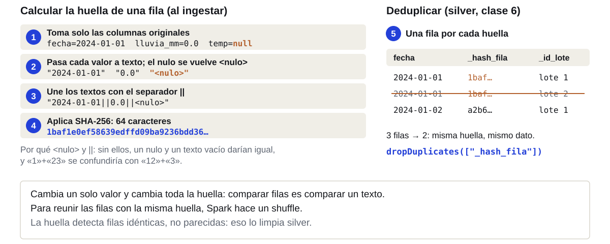
Además, _id_lote y _archivo_origen permiten reprocesar y rastrear cada fila.
El algoritmo, paso a paso (src/pipeline/bronze.py, función hash_fila). 1) Se toman solo las columnas originales de la fuente, no los metadatos: así el hash no cambia de una ingesta a otra. 2) Cada valor se convierte a texto (cast a string), y un nulo se reemplaza por el texto <nulo> con coalesce; si no, concat_ws se saltaría el nulo y una fila con nulo se confundiría con otra. 3) Los textos se unen con el separador || (concat_ws); sin separador, 1 y 23 darían el mismo texto que 12 y 3. 4) Se aplica SHA-256 (F.sha2(..., 256)) y se obtiene un texto de 64 caracteres hexadecimales: si cambia un solo carácter de la fila, cambia toda la huella. El ejemplo del diagrama usa una fila de clima con temperatura nula; el hash mostrado se calculó de verdad sobre el texto 2024-01-01||0.0||<nulo>. 5) Para deduplicar, en silver (clase 6): dropDuplicates(["_hash_fila"]) deja una fila por huella; Spark tiene que reunir las filas con la misma huella en la misma partición, o sea, un shuffle. Es la Celda 45 del notebook 01. Tres usos, cada uno un problema de ingeniería. Duplicados: las filas repetidas llegan porque la fuente publica el mismo viaje dos veces o porque alguien lee los lotes juntos; el hash reduce «¿son iguales estas dos filas?» a comparar un solo texto, aunque detectarlas exige reunir las filas con el mismo hash, o sea un shuffle (lab de la clase 6). El silver del repositorio no lo hace todavía: quitar los duplicados con la huella es un ejercicio del lab de silver de la clase 6. Reprocesos: como cada ingesta es un lote nuevo y el crudo no se toca, se puede volver a ejecutar silver sobre un lote anterior o reingestar sin destruir nada; un lote sin _LOTE_COMPLETO quedó a medias y se ignora. Trazabilidad: _fuente y _archivo_origen dicen de dónde viene cada fila y _fecha_ingesta cuándo llegó, así que si alguien duda de un número, se vuelve al archivo. Qué no resuelve: el hash detecta filas idénticas, no filas parecidas ni viajes incorrectos; eso lo hace la limpieza de silver. Tiempo: 3 min. Siguiente: la tabla de control, que evita traer otra vez un mes que ya está.
La tabla de control guarda una fila por ingesta terminada: fuente, mes y filas
BIGDATA.CONTROL.WATERMARK en Snowflake · un registro de ejemplo del clima de enero
Dice si fue una ingesta repetida.
Problema: una ingesta que corre cada mes tiene que contestar una pregunta antes de descargar nada: ¿este mes ya lo traje? Si la respuesta solo vive en la cabeza de quien ejecuta, falla cuando alguien repite una corrida, cuando el DAG reintenta una tarea o cuando dos personas ingestan lo mismo. Idea: guardar la respuesta en una tabla de control, también llamada watermark (marca de agua): la marca de hasta dónde ya se trajo. Vive en Snowflake con el nombre BIGDATA.CONTROL.WATERMARK, la que creó el comando de la slide 5, y tiene una fila por cada ingesta terminada. Columnas, con el ejemplo de la slide (valores de ejemplo del notebook 03, no una medición; la slide abrevia la URL, que en el ejemplo es la de Open-Meteo): FUENTE, la URL de donde se descargó; CAPA, la capa del lake que se escribió (bronze, silver o gold); TABLA, la carpeta de esa capa (clima, taxi_zones o fhvhv); MES, el mes en texto AAAA-MM, y las zonas, que no tienen mes, usan el valor fijo sin_mes; FILAS, cuántas filas quedaron escritas en el lote; INICIO, el momento, en UTC, en que arrancó la ingesta; REPROCESAR, verdadero si la ingesta se pidió con reprocesar (slide siguiente). Hay dos métodos ya hechos en src/pipeline/watermark.py. consultar_watermark(tabla, capa, mes) devuelve un texto en formato JSON con la lista de los registros de esa tabla, capa y mes, ordenados por INICIO, y [] si no hay ninguno. registrar_watermark(fuente, capa, tabla, mes, filas, inicio, reprocesar) agrega una fila. Las dos hablan con Snowflake con consultas parametrizadas: los valores viajan aparte de la sentencia SQL, nunca pegados en ella. Se registra solo al terminar bien: si la ingesta falla a la mitad, no queda registro y la siguiente corrida lo intenta de nuevo. Se usa desde el Code Editor con la conexión «default» de ~/.snowflake/connections.toml, y desde la clase 6 la usará el DAG. Pendiente para la clase 6: dentro de Glue no existe ese archivo de conexión, y cómo llega la conexión a Snowflake (un secreto de AWS y el conector en Glue) todavía hay que resolverlo. Tiempo: 4 min. Siguiente: la regla con la que la ingesta usa esta tabla.
Si el mes ya está registrado y no pides reprocesar, la ingesta no hace nada
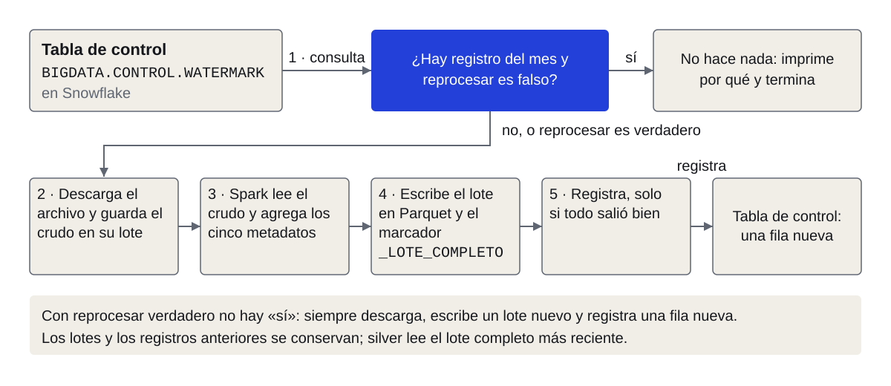
Reprocesar es ingestar otra vez un mes ya registrado, porque la fuente pudo corregirlo; no borra nada.
La regla es corta y está en el diagrama, que se lee de izquierda a derecha y de arriba abajo. Paso 1: la ingesta consulta la tabla de control con la tabla, la capa y el mes. Si ya hay un registro del mes y reprocesar es falso, imprime por qué no hace nada (cuántos registros hay, el último, con cuántas filas) y termina, sin descargar ni escribir. Si no hay registro, o si reprocesar es verdadero, sigue. Paso 2: descarga el archivo desde la fuente original y guarda el crudo en la carpeta de su lote. Paso 3: Spark lee el crudo y le agrega los cinco metadatos. Paso 4: escribe el lote en Parquet y, al final, el marcador _LOTE_COMPLETO. Paso 5: solo entonces registra en la tabla, con las filas que de verdad quedaron escritas. Por qué el registro va al final: es lo que hace confiable la tabla, porque un lote a medias nunca queda registrado y la corrida siguiente lo intenta de nuevo. Por qué existe reprocesar: la fuente puede corregir un mes pasado (la TLC puede volver a publicar un archivo) o una ingesta anterior pudo salir mal; sin reprocesar, la tabla diría «ya está» y el error quedaría para siempre. Reprocesar no borra nada: crea un lote nuevo, con su propio crudo, y una fila nueva en la tabla; los lotes anteriores siguen ahí y silver lee el lote más reciente. La decisión no depende de cuántos registros haya, sino de si hay alguno y del valor de reprocesar. Es la propiedad que busca un pipeline que corre cada mes: ejecutarlo dos veces seguidas es seguro, y reprocesar es una decisión explícita. Esta misma lógica es la que ejecutará el DAG de la clase 6, con el mes y reprocesar. Qué no resuelve: la tabla no impide que dos ingestas del mismo mes arranquen a la vez, porque ninguna ve el registro de la otra hasta que termina; por eso la ingesta del curso corre desde un solo DAG. Tiempo: 4 min. Siguiente: ver funcionar los dos métodos de la tabla antes de usarlos.
Los dos métodos de la tabla de control ya están hechos: así cambian la tabla
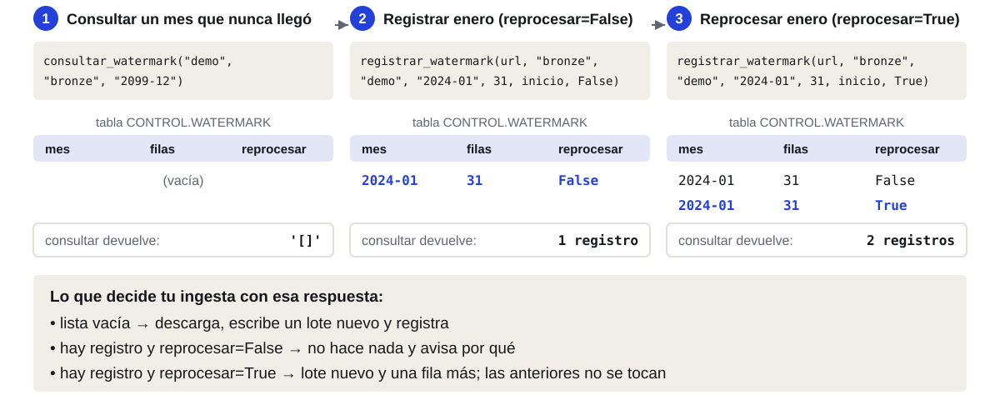
Notebook 03, Celdas 12 a 14, sobre la tabla de práctica demo.
Cómo contarlo: recorre los tres momentos de izquierda a derecha y señala que la fila nueva aparece en azul; registrar nunca borra. Después, la regla de abajo es exactamente lo que el ejercicio pide programar. Para qué: ver los dos métodos funcionando antes de pedirte que los uses en el ejercicio. Dónde: tu copia de 03_lab, con las Celdas 1 a 4 ya ejecutadas; no hace falta Spark. Pasos, uno por celda. Celda 12: borra los registros de la tabla demo y consulta el mes 2099-12, que nunca se ingestó. Salida esperada: «Respuesta: '[]'», «Tipo: str» y «Registros: 0». La respuesta es el texto [], no una lista de Python: es JSON, y para recorrerlo se convierte con json.loads. Los segundos de esta primera celda no se midieron: se miden en el ensayo (abre una conexión a Snowflake). Celda 13: registra una ingesta de ejemplo (31 filas del mes 2024-01) y vuelve a consultar. Salida esperada: el texto JSON tal como llega y después el mismo contenido ya convertido, con un diccionario de siete campos en minúscula: fuente, capa, tabla, mes, filas, inicio y reprocesar. Celda 14: registra una segunda ingesta del mismo mes con reprocesar verdadero. Salida esperada: «Registros de demo / 2024-01: 2», una línea por registro con inicio, filas y reprocesar (la más antigua primero, con reprocesar=False, y después la de reprocesar=True), y la decisión de cada caso: con reprocesar=False, «no hace nada y avisa por qué»; con reprocesar=True, «descarga, escribe un lote nuevo y registra». Al final la celda borra los registros de demo («Se borraron 2 registros de demo»): solo se pueden borrar tablas con un nombre que empieza con demo o prueba, así que no se puede perder el historial de una fuente real. Qué mostrar: con dos registros del mismo mes, el último de la lista es el vigente; la decisión depende de si hay algún registro y del valor de reprocesar, no de cuántos haya; y reprocesar agrega una fila sin tocar las anteriores. Errores comunes: «No se encontró la tabla BIGDATA.CONTROL.WATERMARK» o «Insufficient privileges to operate on database 'BIGDATA'» (falta aplicar el comando de la slide 5: cd ~/bigdata && git pull && make reparar-entorno && make snowflake) y «Could not find connection 'default'» (cd ~/bigdata && make snowflake-conexion; si tu conexión se llama distinto, cambia CONEXION_SNOWFLAKE en la Celda 3). Tiempo: 6 min. Siguiente: los cuatro ejercicios del lab.
Cuatro ejercicios construyen la ingesta de las tres fuentes
ingestar_clima(mes, reprocesar)
ingestar_zonas(reprocesar)
ingestar_viajes(mes, reprocesar)
Fuente: notebook 03_lab. Las tres funciones de ingesta siguen el mismo plan de cinco pasos de la slide 43 (consultar, descargar, leer y agregar metadatos, escribir el lote, registrar); lo que cambia de una fuente a otra es la URL, si hay mes y cómo se lee el archivo. Ejercicio 1: calcular_hash_fila, la huella de una fila (Celda 9, con su prueba en la Celda 10); la Celda 11 define agregar_metadatos, ya resuelta, que usa tu huella. Ejercicio 2: ingestar_clima(mes, reprocesar), con cinco huecos, uno por paso (Celda 16, con su prueba en la Celda 17). Ejercicio 3: ingestar_zonas(reprocesar), el mismo plan sin mes: en la tabla de control el mes es sin_mes, el CSV se lee con encabezado y el lote se escribe en un solo archivo (Celda 18, con su prueba en la Celda 19). Ejercicio 4: ingestar_viajes(mes, reprocesar), con un archivo de unos 450 MiB; trae un parámetro limite_filas, el modo de prueba, que descarga el archivo completo y guarda el crudo intacto pero escribe en bronze solo las primeras filas, y una guarda que solo lo permite con una tabla de prueba, porque un lote recortado nunca debe quedar registrado como si fuera el mes completo (Celda 20, con su prueba en la Celda 21). Todo lo demás ya viene resuelto: la sesión de Spark, las rutas, la descarga, la escritura del lote y los métodos de la tabla de control. La Celda 15 prepara archivos pequeños de prueba (un clima de 31 días, 12 zonas y 100 viajes, tomados de tests/data) y define la prueba común, que imprime «Usando archivo de prueba en lugar de <URL>» donde la ingesta real imprimiría «Descargando <URL>»; las pruebas usan tablas que empiezan con prueba_ y el mes 2099-01, que todavía no existe, y borran sus registros al terminar. Después de los cuatro ejercicios, la Celda 22 ejecuta tus funciones con descargas reales y la Celda 23 lista lo que quedó en tu bronze y en la tabla de control. Cada ejercicio trae pistas desplegables, de la más general a la más concreta: se abren de una en una y solo si hacen falta. Tiempo: 3 min. Siguiente: cómo trabajas el lab.
Para saber si avanzas, cada prueba responde OK, PENDIENTE o REVISAR
Ejecuta las Celdas 1 a 15; resuelve la 9.
Resuelve las Celdas 16, 18 y 20; prueba cada una.
Ejecuta las Celdas 22 y 23; cierra con la 25.
Trabajo individual de 60 minutos (con la slide anterior, el lab dura 63); la slide queda proyectada y la única ayuda es el instructor. Cada ejercicio trae qué hacer, por qué importa, pistas desplegables y el hueco «... # TU CÓDIGO AQUÍ»; la prueba imprime OK; PENDIENTE si queda un hueco; o REVISAR con una pista. Paso 1: las Celdas 1 a 4 ya se ejecutaron en la teoría; la 5 enciende Spark y las 6 a 8 definen las funciones ya resueltas y las pruebas; después se resuelve el ejercicio 1 en la Celda 9 y se comprueba en la Celda 10 (debe decir OK) y se ejecuta la Celda 11. Paso 2: se ejecuta la Celda 15, que prepara los archivos de prueba, y se resuelven los ejercicios 2, 3 y 4 en las Celdas 16, 18 y 20, cada uno con su prueba justo debajo (Celdas 17, 19 y 21). Paso 3: con los cuatro en OK, la Celda 22 ejecuta tus funciones con descargas reales (clima en tres llamadas: ingesta, no hace nada y reproceso con otro lote; zonas en dos; viajes de enero en modo de prueba, que descarga el archivo completo de 450.9 MiB y escribe 1 000 filas), la 23 lista lo que quedó en tu bronze y en la tabla de control, la Celda 24 (mes completo de viajes, apagada) es opcional, y la Celda 25 borra los registros de práctica, borra los archivos de prueba y apaga Spark. Después de la 25 las celdas con spark dejan de funcionar hasta reiniciar el kernel. Si dice PENDIENTE aunque escribiste código, quedó la línea con los tres puntos: reemplázalos por tu código y ejecuta de nuevo la celda de la función. Si dice REVISAR, lee la pista, corrige la celda de la función y vuelve a ejecutar la prueba. Los ejercicios 2, 3 y 4 dicen REVISAR si el 1 no está en OK, porque la ingesta usa tu huella. Cada prueba tarda unos segundos porque abre varias conexiones a Snowflake; esos segundos no se midieron y se miden en el ensayo. La Celda 3 ya comprobó la conexión: si allí dijo «Snowflake NO responde», hay que arreglarlo antes del ejercicio 2. Ritmo sugerido, una estimación sin probar con alguien que no conozca el material: ejercicio 1, 10 min; ejercicio 2, 17; ejercicio 3, 10; ejercicio 4, 10; datos reales y lectura de resultados, 11; cierre, 2. Puntos de control para el instructor: al minuto 10 deberían ir en el ejercicio 2; al 27, en el 3; al 37, en el 4; al 47, en la Celda 22; al 58, en la 25. Si alguien va muy atrás, que abra las pistas de una en una; los ejercicios 3 y 4 son una variación del 2, así que avanzan más rápido. Errores comunes: «HTTP Error 429» o URLError en la Celda 22 (Open-Meteo limita las peticiones o no hay red: espera un minuto y repite; como el registro solo se escribe al terminar bien, repetir es seguro); la Celda 22 se ejecuta una sola vez: dentro de ella la segunda llamada de cada fuente imprime «No se ingesta ...: la tabla de control ya tiene ... registro(s)», que es lo esperado; si alguien la repite, la celda borra los registros de práctica y vuelve a descargar los 450 MiB de viajes, así que no hay que repetirla (y nunca después de la Celda 25, que apaga Spark); la descarga de viajes falla por falta de espacio (el archivo pesa unos 450 MiB y el notebook 01 ya guardó otro igual: libera espacio con rm -r ~/datos_clase05/bronze_alumno/_crudo/prueba_fhvhv y repite). Guarda tu copia de 03_lab con tus soluciones: las tres funciones son las que el DAG de la clase 6 llamará. Tiempo: 60 min. Siguiente: el cierre y la clase 6.
¿Cómo se ejecuta tu ingesta cada mes, en orden y sin duplicar?
Airflow, un orquestador, llamará tus funciones con el mes y reprocesar.
Recapitula en voz alta lo construido. Spark reparte los datos en particiones y tareas; las transformaciones anotan y las acciones ejecutan; las operaciones estrechas no se comunican y las anchas hacen shuffle; broadcast evita el shuffle del lado grande; pandas, Spark y Snowflake respondieron lo mismo y ninguno ganó con claridad en una máquina, pero pandas no cabe con el año. El medallion; bronze con el crudo intacto por lote y metadatos en cada fila; la tabla de control con la regla de reprocesar; y cuatro piezas tuyas: calcular_hash_fila, ingestar_clima, ingestar_zonas e ingestar_viajes. Puente: esas funciones son las que el DAG de la clase 6 llamará. DAG significa grafo acíclico dirigido: la lista de tareas con su orden. Airflow, un orquestador, ejecutará el pipeline con el mes y el valor de reprocesar; el DAG no sabrá nada de URLs, de Spark ni de lotes: solo dirá «ingesta el mes 2024-01» o «reprocesa el mes 2024-01», y cada función decidirá, consultando la tabla de control, si descarga o se salta el mes. Dos cosas cambian en la clase 6: base_bronze valdrá s3://<tu bucket>/bronze en lugar de tu carpeta local, y dentro de Glue hay que resolver cómo llega la conexión a Snowflake para que las funciones puedan registrar (pendiente para la clase 6). La clase 6, miércoles 18 de noviembre, también trae Athena, el servicio de AWS que consulta archivos del lake con SQL, sobre tu propio bronze (nulos, duplicados, fechas imposibles; su workgroup corta cada consulta al pasar 1 GB leído, así que habrá que filtrar por mes), el lab de silver y gold, que registra en la misma tabla de control, la secuencia «a mano primero y luego make» y el arranque del Taller 2. Pide que guarden su copia de 03_lab con sus soluciones y que no borren ~/datos_clase05/bronze_alumno: el lab de silver y gold usa los lotes que dejaron allí. Tiempo: 7 min. Siguiente: clase 6, miércoles 18 de noviembre.